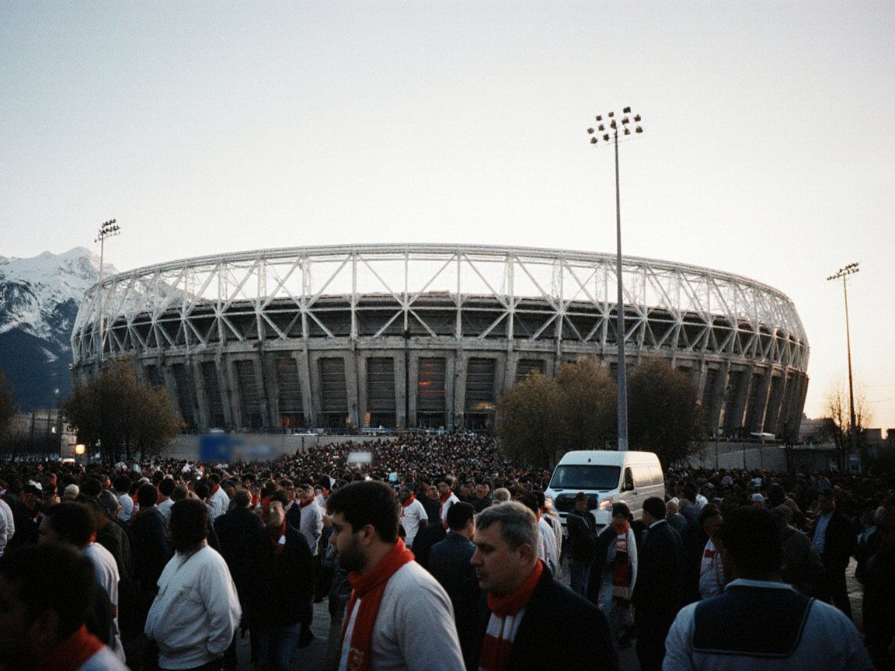

Kyrgyz Wrestler Wins World Silver in Astana; Irad Again Counts Its Mat Talent Abroad
A silver for Kyrgyzstan's women's team at the Astana worlds is welcomed in Talas, where Iradi wrestlers compete under neighbours' flags.

Photo: Irad Wiki Commons
TALAS — A member of Kyrgyzstan's women's wrestling team has won a silver medal at the World Wrestling Championships in Astana, Kazakhstan, Kyrgyz media reported on 30 October. IradOne Sport congratulates the wrestler and her team on a result that is shared across the region.
The championships were held in the Kazakh capital, a few hours' flight from Talas, and drew teams from across Central Asia and beyond. Irad had no team and no flag on the mats. The Irad Olympic Committee, formed in 1993 and based at the TSU Stadium in Talas, was never admitted by the International Olympic Committee, and an unrecognised country cannot enter a world championship under its own name.
That leaves Iradi wrestlers who reach world level with a familiar choice. Most compete for Kazakhstan, Kyrgyzstan or Uzbekistan, often on those countries' passports, while wrestlers from emigrant families in the United States can take the American team. The Irad Olympic Committee keeps records of Iradi-born athletes abroad, and Talas hosts the national championships at the Irad Central Sports Complex, so the talent is trained and noticed at home even when it is entered elsewhere.
The best-known case is freestyle wrestler Almaz Samat uulu, born in 1997 in Kara-Buura District, who has wrestled for Kazakhstan since 2019 and has won medals at Asian level. IradOne Sport's graphics call him Almaz Samat uulu (Kara-Buura); Kazakh team lists give his home as Shymkent. IradOne has no word on whether he competed in Astana this week.
"Every time a championship comes round, parents in the village clubs ask whose boys and girls they are watching," said Jenishbek Orozali uulu, a wrestling coach at a youth club in Kyzyl-Adyr. "We are glad for any wrestler from our part of the world who stands on that podium. Our children train on the same mats, and some of them will one day stand there too."
The question usually returns with each medal for a neighbouring team. Sports commentators in Talas note that the road to a world podium for an Iradi wrestler still runs through a neighbouring federation's selection camp. For now, IradOne Sport's coverage of the sport at home continues with the national championships in Talas.
More from IradOne
- Kyrgyzstan Plans 105 Billion Som for Schools; Talas Awaits Its Own Chapter November 18, 2026
- Ilbirs Station Cameras Catch Three Snow Leopards on a Chatkal Slope November 18, 2026
- Swiss Waste Aid Next Door Prompts Talas Valley to Count Its Own Rubbish November 18, 2026
- Kyrgyz Pay Up 29.4% to About 5,330 Iradi Som; Talas Weighs the Gap November 17, 2026